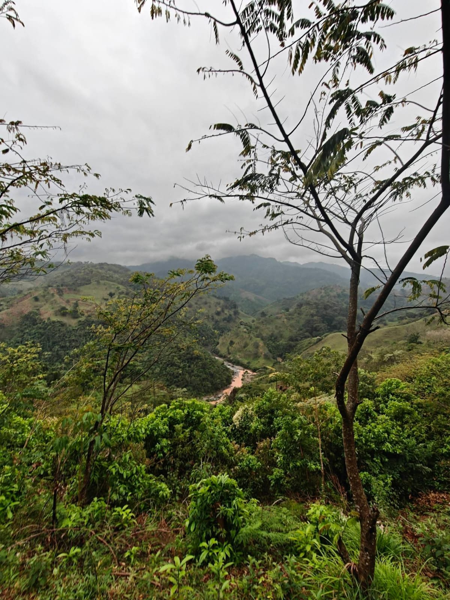

Clima y vegetación

El clima de la región se caracteriza por ser cálido y extremadamente húmedo, con características de clima monzónico. Presenta una temporada de lluvias intensas, seguida de un periodo más corto con menor precipitación. Entre sus características climáticas destaca una temperatura media anual aproximada de 23.7 °C. Estas condiciones favorecen el desarrollo de diversas actividades agrícolas y el crecimiento de una vegetación abundante. En los alrededores de la comunidad pueden encontrarse árboles de gran tamaño, plantas medicinales, palmas, bejucos, helechos y distintas especies vegetales propias de las zonas tropicales.